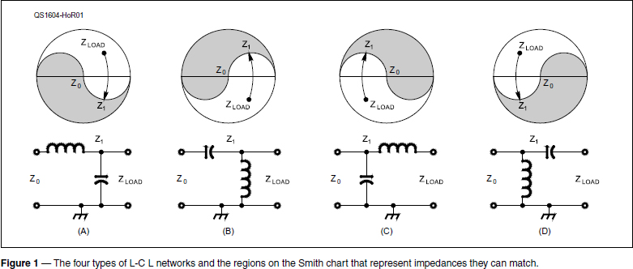
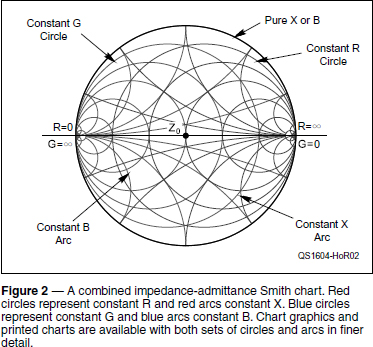
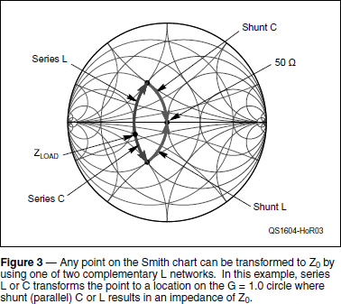

Experiment #159 — More L Network Design
My recent column on designing matching networks generated a fair amount of interest from readers interested in solving a particular matching problem or learning more about impedance matching.1 I thought it would be a good idea to have a practice session and explore a little bit of the Smith chart at the same time.
A Moving Tale
Let’s start by having a look at Figure 1, which shows the various possibilities of using L networks to match a load (ZLOAD) to some nominal reference impedance (Z0).2, 3 These are simplified Smith charts, with the unshaded half representing the set of impedance values that are matched using the circuit immediately below. Each of the four network configurations shown can be designed to transform (match) any impedance in the unshaded region to the impedance at the center of the chart.

Each particular starting point — the load, ZLOAD — can be transformed into Z0 in two steps. The first step takes you to a point labeled Z1 on the border of the matchable region. The second step takes you from Z1 to the chart’s reference impedance, Z0, which is usually 50 Ω for Amateur Radio systems. Each move is following some kind of curved path. What are those curves?
Figure 2 has two parts. The first part is a standard Smith chart, showing impedance coordinates on the black outer circle and center line, plus a set of red arcs and circles. The second part shows the coordinates of admittances, which are the reciprocals of impedances. Admittance coordinates share the outer circle and center line with impedance coordinates but use a mirror-imaged set of blue arcs and circles.

Any point on the chart’s center line represents a pure resistance or conductance (R + j0 or G + j0) and any point on the outer circle represents a pure reactance or susceptance (0 + jX or 0 + jB). Points on one of the red circles all have the same resistance and points on one of the blue circles all have the same conductance. Points on a red arc all have the same reactance and points on a blue arc all have the same susceptance.4 Think of this set of intersecting circles, arcs, and lines as our impedance-matching chessboard.
How does this chessboard “work?” Pieces (impedances or admittances) are moved (transformed) by adding reactances connected in series or parallel (called a shunt connection). As shown in the circuits of Figure 1, the moves can only be along the constant resistance (or conductance) circles, since they don’t add or subtract resistance (or conductance). For example, if I add some positive inductive reactance in series with a load, the added reactance will “move” the load clockwise along a constant-resistance circle. Similarly, if I add some positive capacitive susceptance in parallel with a load, the point will move clockwise along a constant-conductance circle. Adding reactance or susceptance in series or parallel with load can only “move the load” around the chart on these circles.
If I want to transform ZLOAD to the reference impedance Z0, then I have to move part of the way along one type of circle until it encounters the complementary circle that intersects the chart’s center. Then I move along that new circle to Z0. Just like a knight in chess or a Manhattan cab. I have to move first in one direction, then switch to another direction.
Figure 3 shows how there are two solutions to every such problem. Start with the point labeled ZLOAD. It has an impedance of approximately 0.5 – j 0.1 Ω. (Remember, everything is normalized so that the center point, presumably 50 + j 0 Ω, is represented as 1.0 + j 0 Ω.) By adding series XL or XC, I can move clockwise (XL) or counterclockwise (XC) along the red R = 0.5 Ω circle. I need to add enough reactance to reach the blue circle for G = 1.0 S (S stands for siemens, the unit of conductance). Once there, I can move to Z0 by adding either shunt L or shunt C as noted. One set of “moves” represents what happens in the circuit of Figure 1C and the other in Figure 1D. Depending on the value of ZLOAD, there are always two possible circuits that will get you to Z0.

Why would I choose one circuit over the other since both choices wind up at the same point on the chart? Unlike the chess knight that must always move in an L of 2 squares by 1 square, the L network’s pair of reactances can take a wide range of values. One of those pairs will have more practical or convenient values (or be cheaper to purchase) than the other.
Working On Your Knight Moves
Okay, your turn! You should now understand why Wetherell’s L network calculator can solve an impedance matching problem for only two out of the four possible L-C L networks.5 Those are the two network configurations with ZLOAD in matchable regions of the Smith chart.
Another thing you’ve just learned: If an L network can’t match an impedance — turn it around! If you look at the matchable regions of the two networks that are mirror images of each other, such as in Figure 1A and 1C, you’ll see they are complementary. So by turning the network around, the previously unmatchable impedance is guaranteed to be in the matchable region for the new circuit’s configuration.
Let’s try some example calculations to get you into the game and moving your pieces around. Find the two circuits in Figure 1 that can be used for each example and the component values required. (Answers are at the end of the Notes list.)
Example 1: ZLOAD is the feed point impedance of a 10.1 MHz full-wave loop: 110 + j 50 Ω.
Example 2: ZLOAD is the feed point impedance of a Yagi’s driven element at 144.2 MHz: 22 – j 10 Ω.
Example 3: ZLOAD is the feed point impedance of an off-center-fed dipole at 24.9 MHz: 250 – j 150 Ω.
Once you get the hang of it, you can have a lot of fun trying different versions of the matching networks, pushing the impedances to extreme values (high, low, highly reactive), and evaluating which circuit you’d choose to build.
Notes
1See Experiments #21, “The L Network” and #157 “Matching Network — Design and Build.” All previous “Hands-On Radio” columns are available to ARRL members at www.arrl.org/hands-on-radio.
2A complete set of all reactive networks and their matchable regions of the Smith chart are available in the RF Techniques chapter of The ARRL Handbook.
3The ARRL Handbook is available from the ARRL at www.arrl.org/shop and from dealers who carry ARRL publications.
4“Hands-On Radio” Experiments #59 – 61 explain the Smith chart, and there is additional material on the CD-ROM accompanying recent editions of The ARRL Handbook.
5Wetherell’s calculator is available at home.sandiego.edu/~ekim/e194rfs01/jwmatcher/matcher2.html and on other websites.
Answers to example problems:
Example 1: A and B; A – 1013 nH & 207 pF; B – 2515 nH & 245 pF
Example 2: D and C; D – 48.9 nH and 74.5 pF; C – 38.4 nH and 24.9 pF
Example 3: A and C; A – 770 nH & 34 pF; C – 722 nH & 53 pF